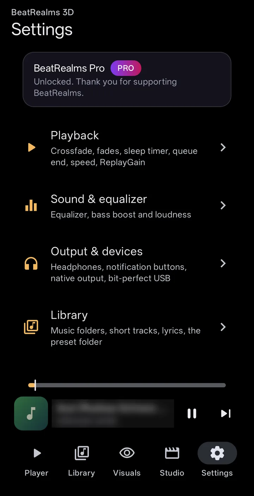

Toque suas músicas e veja tudo se mover em 3D. Os visuais ouvem a própria música, não só o volume, e você pode transformar o que vê em vídeo. Offline, sem conta e sem anúncios.
Os visuais reagem ao próprio som, enquanto ele toca:
Volume, graves, médios e agudos
Batidas de bateria: bumbo, caixa e chimbal
Notas, acordes e o tom da música
As subidas e os drops
Sem som, sem visuais: quando a música para, a imagem entra em repouso. Os visuais também podem seguir o microfone ou o som de outro app, se você ativar essa opção.
02 · 334 styles
Voe através dele, caia dentro dele
Cenas 3D para sobrevoar, fractais, nebulosas, terrenos, vidro, fluidos e simulações de partículas, em dezenove famílias. Mais de 700 looks incluídos e, com o Pro, seus próprios arquivos de preset .milk.
Capturas de tela do app em um celular, tocando música.
03 · Auto mode
Um diretor que acompanha a música
O modo Auto muda o estilo, a câmera e o movimento conforme a música passa de uma parte para outra. Suas cores continuam suas: ele nunca restringe a paleta que você escolheu.
Grátis o primeiro minuto de cada música Pro a música inteira
04 · Customize
Deixe cada visual do seu jeito
Comece com um botão ou vá fundo em onze grupos. Tudo o que você muda pode ser salvo, compartilhado e recuperado.
Quatro botões rápidos. Glow, Heat, Bend e Flow mudam todo o clima com um só giro.
Seus próprios botõesPro. Ligue quaisquer parâmetros a um botão, molde-o com uma curva (entrada suave, saída suave, curva em S) e deixe uma onda ou um envelope girá-lo.
Você escolhe o que reage. Veja e edite o que se move em um bumbo, uma nota ou um drop; embaralhe, ou volte ao padrão do estilo.
Onze grupos de controles. Câmera, movimento, o mergulho sem fim, efeitos, transições e mais.
Suas cores. Tire a paleta da capa do álbum ou escolha a sua.
Toque na imagem. Faça pinça e gire a imagem, borre-a com os dedos ou mexa o líquido no modo líquido.
Presets e modelos. Salve um look, pegue partes de outro, compartilhe como modelo e abra os que compartilharem com você.
Aleatorize tudoPro e fique com o que gostar.
05 · Music player Grátis
Antes de tudo, um player de música de verdade
Faixas, álbuns, artistas, pastas e playlists, com busca
Fila, ordem aleatória, repetição e timer de suspensão
ReplayGain, um equalizador e transições suaves entre faixas
Letras de um arquivo .lrc ou das tags da faixa
Um widget para a tela inicial e um bloco nas Configurações rápidas

06 · Make a video
Renderize o visual sobre uma música
Transforme qualquer música do seu celular em um MP4, pronto para um feed, uma live ou uma tela grande.
Resolução720p, 1080p ou 4K
Taxa de quadros24 a 60 fps
CodecH.264 ou HEVC
Formato16:9, 9:16, 1:1, 4:5, 4:3 ou 21:9
Grátis até 1080p a 30 fps, um minuto, com marca d'água. Pro 4K, 60 fps, duração completa, sem marca d'água, além de renderizações em loop e de uma fila ou playlist inteira.
A taxa de quadros máxima em cada tamanho, e o HEVC, dependem do que o codificador de vídeo do seu celular consegue fazer.
07 · Record Pro
Segure para gravar ao vivo
Mantenha o dedo sobre o visual para gravar um vídeo ao vivo do que ele mostra e ouve, até você parar. Capturas de tela são grátis.
08 · Beyond the phone Pro
No papel de parede, na TV, no notebook
Um papel de parede animado e um protetor de tela que reagem ao que está tocando
Transmita o visual e a música para uma TV com o Google Cast
Mostre o visual em um navegador, em um computador na mesma rede Wi-Fi, por um link ou um QR code
Mostre em uma tela conectada: HDMI, USB-C ou tela sem fio
Everything in BeatRealms
O resumo completo
Todos os recursos, pelo que você faz com eles. Tudo o que estiver marcado como Pro precisa do desbloqueio único; o resto é grátis.
Play
Fila, ordem aleatória, repetição e loop A–B
Crossfade, transições suaves entre faixas e velocidade de reprodução
Timer de suspensão e a escolha do que acontece quando a fila termina
Retome o que você ouviu por último
Favoritas e tocadas recentemente
Letras sincronizadas de um arquivo .lrc ou das tags da faixa; toque em uma linha para ir até ela
Library
Faixas, álbuns, artistas, pastas e playlists
Busque títulos, artistas e álbuns
Ordene por título, artista, álbum, duração ou data de inclusão
Escolha suas pastas de música e oculte faixas muito curtas
Edite os detalhes de uma faixa
Encontre faixas duplicadas
Sound
Equalizador com presets: Flat, Bass, Treble, Vocal, Rock, Electronic
Reforço de graves e loudness
ReplayGain
Configurações de fone de ouvido e dos botões da notificação
Saída bit-perfect para um DAC USB
Visuals
334 estilos em 19 famílias
Reage a volume, graves, médios e agudos, bumbo, caixa e chimbal, notas, acordes, tom, subidas e drops
O modo Auto dirige estilo, câmera e movimento ao longo da música
Cores tiradas da capa do álbum
Seus próprios presets e texturas .milk Pro
Picture-in-picture, ativado automaticamente se você quiser
Customize
Botões rápidos Glow, Heat, Bend e Flow
Seus próprios botões, com curvas, ondas e envelopes Pro
Edite o que reage à música, ou embaralhe
Onze grupos de controles
Mais de 700 looks incluídos
Salve presets, compartilhe e importe modelos
Aleatorize tudo Pro
Touch
Faça pinça e gire a imagem
Borre os visuais com os dedos, na intensidade que você definir
Um modo líquido que você empurra com o dedo
Vibração ao toque e três tamanhos de botão
Studio
Renderize uma música em MP4: 720p, 1080p ou 4K, 24 a 60 fps, H.264 ou HEVC
Formatos: 16:9, 9:16, 1:1, 4:5, 4:3 e 21:9
Presets de um toque: YouTube, Shorts, TikTok, Feed, Square e Master
Uma meta de loudness com dicas para YouTube, Shorts e TikTok
Renderizações em loop com crossfade sem emendas e variação de paleta Pro
Renderize uma fila ou playlist inteira Pro
Salve na sua pasta Movies ou em uma pasta que você escolher, depois compartilhe ou envie
Record and capture
Segure para gravar ao vivo o visual e o som dele Pro
Capturas de tela, grátis
Faça os visuais seguirem o som de outro app
Ou o microfone e o ambiente ao seu redor
Beyond the phone
Papel de parede animado e protetor de tela Pro
Transmita o visual e a música para uma TV Pro
Mostre em um navegador, em um computador, por link ou QR code Pro
Telas HDMI, USB-C e sem fio Pro
O mesmo app no Android TV
Android Auto, um widget para a tela inicial e um bloco nas Configurações rápidas
Your data
Sem conta, sem anúncios, sem análises
Funciona offline; a rede é usada só para o Cast e o link com o computador
Faça backup e restaure playlists, favoritas, histórico, edições de faixas, configurações e presets importados
Ajuda integrada para cada parte do app
Segue a configuração "Remover animações" do Android
O que está incluído
Grátis e Pro, lado a lado
Nenhum dos dois tem anúncios. O Pro é uma única compra no app, não uma assinatura, e você pode testá-lo por uma hora antes de comprar. Vídeos renderizados ou gravados durante o teste mantêm o limite de um minuto e a marca d'água.
O que o app gratuito e o Pro incluem
Recurso
Grátis
Pro
Player de música
Tudo
Tudo
Estilos visuais
Mais de 60, o primeiro de cada uma das dezenove famílias
Todos os 334
Seus próprios presets .milk
Não
Sim
Reações a notas e tom
Sim
Sim
Modo Auto
Primeiro minuto de cada música
A música inteira
Customize
Controles básicos e os botões rápidos
Todos os controles, seus próprios botões, aleatorizar tudo
Exportação de vídeo
Até 1080p, 30 fps, um minuto, marca d'água
Até 4K, 60 fps, duração completa, sem marca d'água
Renderizações em loop e de playlist
Não
Sim
Gravar ao vivo
Não
Sim
Capturas de tela
Sim
Sim
Papel de parede animado e protetor de tela
Não
Sim
Cast, exibição em computador, telas conectadas
Não
Sim
Anúncios
Nenhum
Nenhum
Preço
Grátis
Uma compra, não uma assinatura
Perguntas
O Pro é uma assinatura?
Não. O Pro é uma única compra no app pelo Google Play. Você pode testá-lo por uma hora antes.
Ele precisa de internet ou de uma conta?
Conta, nunca. O app funciona offline. A internet é usada apenas para o Cast na TV e para mostrar o visual em um computador, pela sua própria rede Wi-Fi. O componente Google Cast envia ao Google registros de uso anônimos; a política de privacidade explica isso.
Que permissões ele pede, e por quê?
Cada uma é pedida quando você precisa dela pela primeira vez, sempre com o motivo antes.
Música e áudio: para encontrar e tocar as músicas do seu celular, na primeira vez que você abrir a Library.
Notificações: controles de reprodução e o progresso enquanto um vídeo é renderizado ou uma transmissão está em andamento.
Microfone (opcional): só se você deixar os visuais seguirem o ambiente ou o som de outro app, ou deixar o papel de parede ouvir outros apps. O som é analisado no celular e nunca é enviado a lugar nenhum.
Captura de tela e áudio (opcional): a caixa de diálogo do próprio Android, sempre que você começar a visualizar outro app.
Acesso a notificações (opcional): para mostrar o nome de uma música que outro app está tocando. Só as sessões de mídia são lidas.
Rede: só para o Cast na TV e para mostrar o visual em um computador, na sua própria rede Wi-Fi.
Nunca são pedidos: câmera, localização, contatos, telefone, SMS ou acesso a todos os arquivos.
Em quais celulares ele funciona?
Android 13 ou mais recente.
Para onde vão os meus vídeos?
Para a pasta Movies do seu celular. Nada do que você cria sai do celular, a menos que você compartilhe.
Como consigo ajuda?
Envie um e-mail para CONTACT_EMAIL. Diga qual é o seu celular e a versão do Android, e o que você estava fazendo.
Aviso de fotossensibilidade
Os visuais são brilhantes, rápidos e em tela cheia, e podem piscar. Um pequeno número de pessoas pode ter uma convulsão ao ver luzes ou padrões piscando, mesmo sem histórico de epilepsia. O app limita o quanto e a que velocidade os próprios efeitos podem mudar o brilho, e segue a configuração "Remover animações" do Android, mas não mede a imagem final, e os presets .milk só recebem um limite de brilho: as piscadas que eles mesmos desenham não são limitadas. O app não consegue tornar os visuais seguros para todos. Se você ou qualquer pessoa assistindo for sensível a luzes piscando, não use os visuais e pare imediatamente se não se sentir bem.